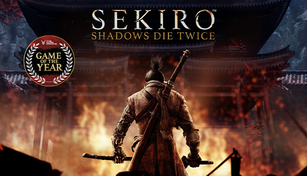
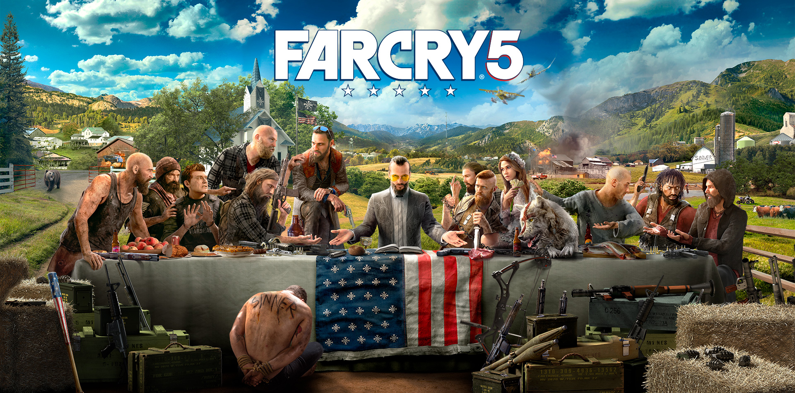

Blog Fontana Roman
Hola, mi nombre es roman este blog voy hablar de unos de mos hoby que son los videojuegos, en este blog hablare de mis 3 juegos Favoritos.
SEKIRO
Sekiro Shadows Die Twice esta en mi top 1 de videojuegos, sekiro cuenta la hostoria de un shinobi del periodo sengoku, conocido como lobo manco, que lo acompañaremos en la venganza hacia el clan ashina por el secuestro de su Amo.
FARCRY 3
Far Cry 3 toma lugar en alguna isla entre el océano Índico y el pacífico. La presencia de un Mitsubishi A6M Zero destrozado al principio del tráiler oficial sitúa al juego en alguna parte del pacífico. El objetivo principal de este es rescatar a los amigos y novia del protagonista, capturados por los piratas que habitan en las islas, y escapar de las mismas.
FARCRY 5
El juego se desarrolla en el condado ficticio de Hope, Montana, donde un predicador llamado Joseph Seed ha logrado prominencia en la región. Seed cree que ha sido elegido para proteger a la gente del condado de un "colapso inevitable" y ha establecido una congregación llamada La Puerta de Edén. En realidad, Seed es un predicador radical y La Puerta del Edén es un culto militar del juicio final. Bajo su gobierno, el culto ha intentado convertir a los residentes del condado de Hope y los ha amenazado para evitar que pidan ayuda al gobierno federal. Cuando un intento de detener a Seed resulta en la muerte de varios oficiales de la ley, el jugador es arrastrado al conflicto armado entre La Puerta de Edén y los residentes restantes del condado de Hope, quienes están organizando un movimiento de resistencia.
